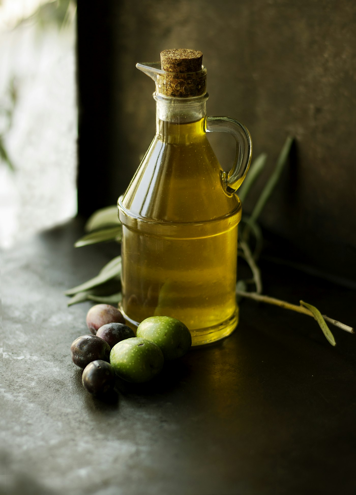

Il Casale
Si arriva, si entra, si resta
Il Casale sta a Casale Pollice 4, sotto il borgo di Pizzoferrato. La strada è quella della montagna: quando si scende dalla macchina, la vallata è già lì.
In sala c’è Carmine. Nelle recensioni tornano anche Fernanda e Michele — volti che gli ospiti riconoscono, nomi che chiederemo al titolare di raccontare per bene, con la storia vera del locale.
Si mangia come in una casa abruzzese. Gli antipasti non finiscono, la pasta è fatta in casa, la carne arriva dalla brace. Poi i dolci e i liquori della casa. È questo il ritmo che gli ospiti descrivono, sempre nello stesso modo.
Testo di prova, scritto per far vedere il tono del sito. Lo sostituiremo con le parole del titolare: da quando esiste il Casale, chi cucina, cosa significa «casale» in questa contrada.

Riferimento di stile · non è la sala de Il Casale

Il territorio
1.251 metri, terrazza d’Abruzzo
Pizzoferrato è nel Parco Nazionale della Majella, in provincia di Chieti. Il paese sta sotto la rupe; il ristorante sta in contrada. Si viene per la tavola e si porta a casa anche il paesaggio: verde d’estate, neve d’inverno, silenzio tutto l’anno.

La cucina
Terra, stagione, mano
Tartufo, porcini, orapi, cinghiale: i sapori che tornano quando la montagna li dà. Il resto dell’anno è la casa — bruschette, pizzette fritte, ravioli, pappardelle, grigliata. Niente carta di pesce, niente pizzeria: una tavola di terra, onesta e abbondante.
Queste frasi servono a far sentire la voce del sito. Le rifaremo insieme al titolare, piatto per piatto, quando avremo i testi ufficiali.